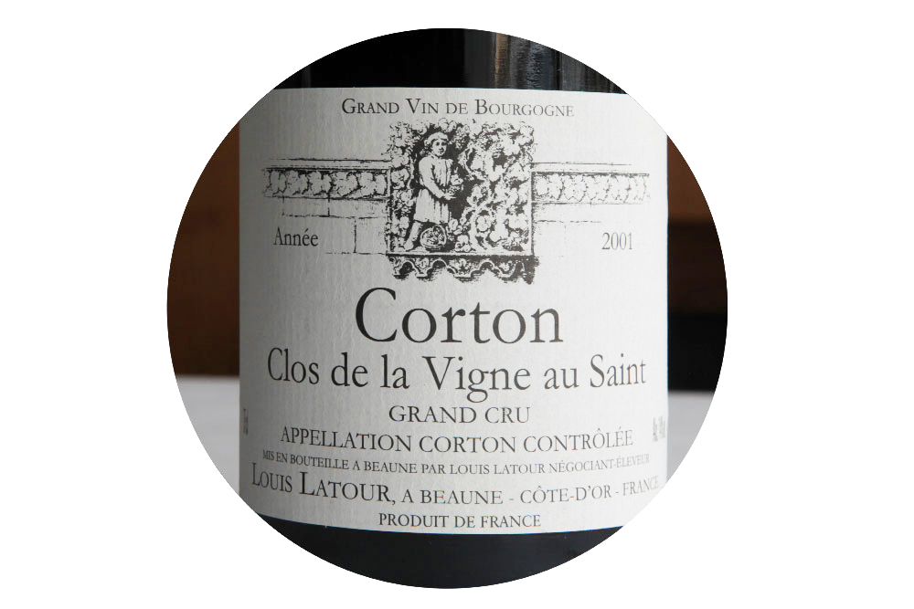
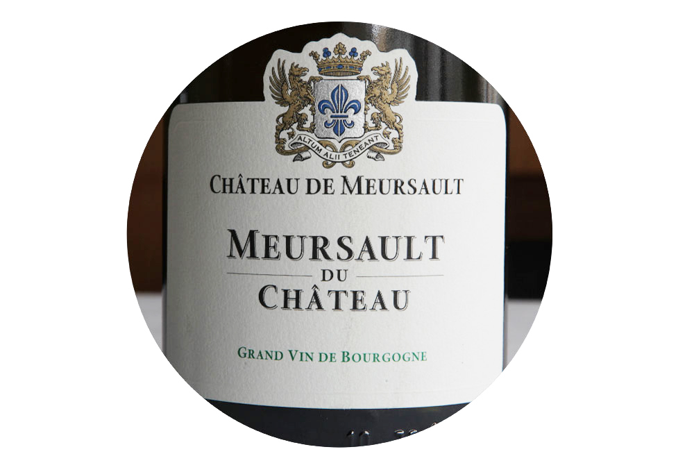
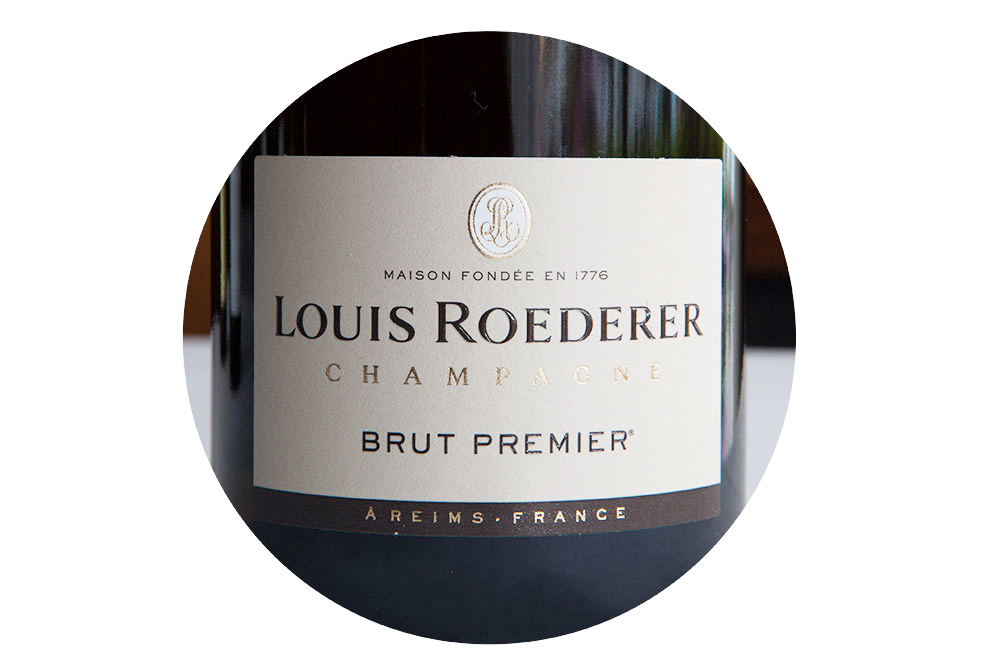
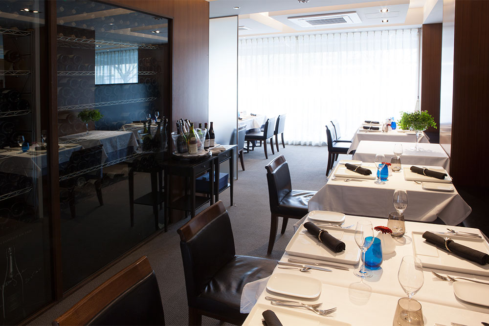

西宮・夙川フレンチレストラン「ル ベナトン」
お知らせ
- 本日ディナーはケータリングの為お店はお休みさせて頂いております。
-
裏口にてかき氷販売中！！
まだまだ暑い日が続いておりますベナトン裏口にて懐かしい感じのかき氷を販売しています。
その他お惣菜等の販売もしております。お気軽にスタッフにお尋ねください。 -
9月のお休みのお知らせ
毎週水曜日、10日木曜日でお休みを頂戴いたします。
9月9日水曜日、10日木曜日で冬野菜の種まきの為連休でお休みを頂戴いたします。
-
10月のお休みのお知らせ
毎週水曜日、8日木曜日でお休みを頂戴いたします。
10月7日水曜日、8日木曜日で食材探しの旅の為連休でお休みを頂戴いたします。 -
ケータリング、テイクアウト、お弁当等もご相談ください。
オードブルの盛り合わせ、お惣菜弁当、ひもを引くと温まるお弁当等々、お店まで直接お問い合わせください。
ランチ 11：45～14：00（ラストオーダー）
日々の疲れを癒やし、 ゆっくりと過ごす贅沢時間
魚介は淡路産、野菜は兵庫県産をメインに、肉は各々の時期にもっともおいしいものを日本全国から仕入れ、ヨーロッパ各地からも、オマール海老、秋から冬にかけて旬をむかえるハト、カモなどのジビエも仕入れ、本格的なフランス料理を、お昼時のおすすめの量でご提供しています。
お客様に贅沢な時間を過ごしていただきたいという思いから、ランチでも、ディナーでご提供しているコース・ワインもご注文いただくことができます。普段体験することができない非日常な一時をお過ごしください。
Aコース(ランチのみ)
- アミューズ
- 前菜（数種類の中らお選びいただけます）
- メイン料理（本日のお魚又はお肉料理）
- デザート
- パン、コーヒー
3,850円(税込)
Ｂコース(ランチのみ)
- アミューズ
- 前菜（数種類の中らお選びいただけます）
- お魚料理（数種類の中らお選びいただけます）
- お肉料理（数種類の中らお選びいただけます）
- デザート
- パン、コーヒー
5,280円(税込)
Ｃ・シェフお任せコース(ランチのみ)
- アミューズ、前菜、メイン（お肉、魚介）を、その日の食材でお料理を組み立てさせていただきます
- デザート
- パン、コーヒー
6,600円(税込)
ディナー 18：00～21：00（ラストオーダー）
本場フランス料理、ブルゴーニュワイン
フランス食の都「ボーヌ」仕込みのディナーをご堪能ください
フランス・ブルゴーニュ地方は食とワインの宝庫として知られています。「食の都」ボーヌの星付きレストランで修業した当店シェフは、カモ、シカ、イノシシなどのお肉への最高の火入れの技術を有し、本場のフランス料理だけではなくワインにも精通しています。野菜は毎週、旬の物を産地まで買い付けに行きます。ヨーロッパ各地から仕入れるハト、カモなどのジビエ料理、フランス・ブルターニュ産のオマール海老、日本近海で獲れた新鮮な魚介もお楽しみいただけます。
ブルゴーニュワインに特化したワインセラーも店内に完備。現地の風土を知り尽くした選び抜かれたブルゴーニュワインと本格的なフランス料理は、あたかもブルゴーニュを旅したような食体験です。旬の食材からコース料理をご提案いたしますので、ゆったりとした時間をお楽しみください。
ブルギニオンコース
- アミューズ
- 前菜（数種類の中らお選びいただけます）
- お魚料理
- お肉料理（数種類の中らお選びいただけます）
- チーズ又は、小さなサラダ
- デザート(数種類の中からお選びいただけます)
- パン、コーヒー
6,600円(税込、サービス料５%別途)
グルマンコース
- アミューズ
- 前菜２種（数種類の中らお選びいただけます）
- ボキャルドオマール（オマール海老のスープ仕立)
- メイン料理（数種類のお肉の中からお選びいただけます)
- チーズ又は、小さなサラダ
- デザート(数種類の中からお選びいただけます)
- パン、コーヒー
9,350円(税込、サービス料５%別途)
デギュステ・シェフお任せコース
- アミューズ
- その日の食材でお客様とお話させていただいてお料理を組み立てさせていただきます
- デザート(数種類の中からお選びいただけます)
- パン、コーヒー
13,200円(税込、サービス料５%別途)
その他、お客様のご希望がございましたら、スタッフにお申し付け下さい。
ワイン
ブルゴーニュワインを中心に取りそろえております
ワインの名産地「黄金の丘」より選び抜いたワインをご提案いたします
食の都「ボーヌ」は、ワインの名産地である黄金の丘でも知られているブルゴーニュ地方の中心部に位置しています。そこの星付きレストランで修業した当店シェフは、毎週のようにドメーヌをめぐり、作り手と、香りやマリアージュ、飲み頃について意見を交わしましてきました。そこで身につけた知識と感性で、ワインをおすすめいたします。
当店ではブルゴーニュワインに特化したワインセラーを店内に完備し、当店シェフが選びぬいたブルゴーニュワインからお料理にあわせてワインを提案させていただきます。当店でどのようなワインがあるか、ぜひ、以下のリストをご覧ください。

赤ワインリスト
VIN ROUGE de Bourgogne
ブルゴーニュ ( 赤 )
2011 Bourgogne Passetoutgrain DOMAINE ODOUL-COQUARD
ブルゴーニュ パストゥーグラン オドゥール コカール
¥3,200
2010 Bourgogne Pinot Noir Philippe Augustin
ブルゴーニュ ルージュ フィリップ オーグスティン
¥4,200
2004 Bourgogne Rouge Domaine MODOT Pere & Filles
ブルゴーニュ ルージュ ドメーヌ モド
¥4,400
2007 Bourgogne PINOT NOIR Patrick Clerget
ブルゴーニュ ピノノワール パトリック クレルジェ
¥5,200
2002 SANTENAY 1er cru Le Passetemps Philippe Brenot
サントネ 1er クリュ フィリップ ブルノ
¥5,700
2013 SantenayVieilles Vignes DOMAINE Philippe Jeannot
サントネ VV ドメーヌ フィリップ ジャノ
¥5,800
2008 BOURGOGNE DOMAINE RENE LECLERC
ブルゴーニュ ドメーヌ ルネ ルクレール
¥6,100
2014 SANTENAY VIEILLES VIGNES LUCIEN MUZARD&FILS
サントネイ VV リュシオン ミュザー
¥6,500
2008 MARSANNAY SANT-JACQUES FOUGERAY DE BEAUCLAIR
マルサネ サン ジャック フジュレイ ド ボークレール
¥6,600
2007 Bourgogne Hautes Cotes de Beaune JAYER-GILLES
オー コート ボーヌ ルージュ ジャイエ ジル
¥7,600
2013 MARSANNAY CHATEAU DE MARSANNAY
マルサネ シャトー ド マルサネ
¥8,400
1993 VOLNAY 1er CRU CAILLERETS BITOUZET-PRIEUR
ヴォルネイ 1er カイユレ ビトゥーゼ プリウール
¥9,100
1985 VOLNAY-SANTENOTS PREMIER CRU DOMAINE ROUGEOT
ヴォルネイ サントノ プルミエ クリュ ドメーヌ ルジョー
¥9,700
2012 SAINT-AUBIN 1ER CRE-LES PITANGERETS Francos Carillon
サントーバン ピタンジュレ フランソワ カリオン
¥9,800
2000 NUITS-SAINT-GEORGE Patrick Clerget
ニュイ サン ジョルジュ パトリック クレルジェ
¥10,000
2008 Beaune Les Teurons PREMIER CRU DOMAINE CHATEAU DE CHOREY
ボーヌ レ トゥーロン シャトー ド ショレイ
¥10,100
1995 Bourgogne Rouge Joseph Roty
ブルゴーニュ パストゥーグラン ジョセフ ロティ
¥10,500
2013 Vosne-Romanee DOMAINE ODOUL-COQUARD
ヴォーヌ - ロマネ オドゥール コカール
¥11,300
1976 Santenay LA ROUTE DES VIGNES
サントネ ラ ルート デ ヴィーニュ
¥12,000
2010 MARSANNAY Philippe Charlopin
マルサネ モンシュヌヴォイ シャルロパン パリゾ
¥12,100
2005 VOSNE-ROMANEE DOMAINE DANIELRION&FILS
ヴォーヌロマネ ダニエルリヨン
¥12,200
2005 SAVIGNY-LES-BEAUNE 1ER CRU "LES GRAVAINS" DOMAINE MICHEL & JOANNA ECARD
サヴィニー レ ボーヌ ミッシェル エ ジョアンヌ エカール
¥12,600
2010 BEAUNE 1er Cru CLOS DES URSULES LOUIS JADOT
ボーヌ プルミエ クリュ クロ デ ズルシュール ルイ ジャド
¥12,800
2008 Hospices de Beaune VOLNAY Premier Cru Cuvee Blondeau
オスピス ド ボーヌ ヴォルネイ 1er クリュ キュベ ブロンド
¥13,000
1997 Marsannay Champs saint etienne PHILIPPE Roty
マルサネ シャン サン エティエンヌ フィリップ ロティ
¥13,200
2002 Nuits-St-Georges DOMAINE JEAN CHAUVENET
ニュイ サン ジョルジュ ジャン ショーヴネ
¥13,900
2010 GEVREY-CHAMBERTIN CHAMP DOMAINE DUROCHE
ジュヴレ シャンベルタン シャン デュロシェ
¥14,200
2008 MOREY-SAINT-DENIS PREMIE CRE CLOS BAULET FREDERIC MAGNIEN
モレ サン ドニ プルミエ クリュ クロ ボーレ フレデリック マニャン
¥14,200
2008 GEVREY-CHAMBERTIN CHAMP DOMAINE DUROCHE
ジュブレ シャンベルタン シャン デュロシェ
¥15,000
1989 POMMARD VV FABIEN COCHE-BOUILLOT
ポマール VV ファビオン コシュ ‐ ブイヨ
¥15,000
2007 NUITS-ST-GEORGES LES LAVIERES DOMAINE DANiEl RiON & Fils
ニュイ サン ジョルジュ ダニエル リオン
¥15,300
2001 CHAMBOLLE-MUSIGNY DOMAINE Paul Misset
シャンボール ミュジニ ドメーヌ ポール ミセ
¥15,300
2007 MOREY-SAINT-DENIS PREMIER CRE RUCHOTS FREDERIC MAGNIEN
モレ サン ドニ プルミエ クリュ ルショ フレデリック マニャン
¥15,500
2010 Charmes-Chambertin GRAND CRU DOMAINE DUROCHE
シャルム シャンベルタン ドゥロシェ
¥15,600
2012 CHAMBOLLE-MUSIGNY VIEILLES VIGNES LIGNIER-MICHELOT
シャンボール ミュジニー リニエ ミシュロ
¥16,300
1978 Beaune Bressandes Antnin Rodet
ボーヌ ブレッサンド アントナン ロデ
¥17,500
2011 GEVREY-CHAMBERTIN PREMIER CRE LAVAUT-SAINT-JACQUES FREDERIC MAGNIEN
ジュヴレ シャンベルタン ラヴォー サン ジャック フレデリック マニャン
¥18,100
2004 Corton Renardes Grand Cru E.A.R.L francois GAY ET Fils
コルトン ルナルド グラン クリュ フランソワ ゲ
¥18,400
2006 CORTON RENARDES GRAND CRU DOMAINE D'ARDHUY
コルトン ルナード グラン クリュ ドメーヌ ダルデュイ
¥18,900
2001 Clos-Saint-Denis Grand Cru GEORGES LIGNIER ET FILS
クロ サン ドニ グラン クリュ ジョルジュ リニエ
¥19,600
2003 CORTON LES BRESSANDES GRAND CRU DOMAINE CHANDON DE BRIAILLES
コルトン レ ブレッサンド グラン クリュ ドメーヌ シャンドン ド ブリアイユ
¥19,600
2009 MOREY SAINT-DENIS PREMIER CRU LES FACONNIERES Domaine LIGNIER-MICHELOT
モレ サン ドニ 1er クリュ リニエ ミシュロ
¥19,700
1976 COTE DE NUITS-VILLAGES DOMAINE DANIEL RION
コート ドゥ ニュイ ヴィラージュ ドメーヌ ダニエル リヨン
¥19,900
1979 Aloxe Corton Antonin Guyon
アロース コルトン フルニエール アントナン ギュイヨン
¥20,000
2010 GEVREY-CHAMBERTIN 1ER CRE CHERBAUDES LOUIS BOILLOT & FILS
ジュブレ シャンベルタン 1ER クリュ ルイ ボワイヨ
¥20,200
2011 GEVREY-CHAMBERTIN 1ER CRE CHERBAUDES LOUIS BOILLOT & FILS
ジュブレ シャンベルタン 1ER クリュ ルイ ボワイヨ
¥22,100
1986 Corton-Perrieres Domaine P.DUBREUIL-FONTAINE
コルトン ペリエール デュブルイ フォンテーヌ
¥22,500
1978 Aloxe-Corton Edmond Cornu
アロース コルトン エドモンド コルヌ
¥22,500
2005 GEVREY-CHAMBERTIN DOMAINE CHARLOPIN-PARIZOT
ジュブレ シャンベルタン VV シャルロパン パリゾ
¥25,900
1990 VOLNAY-SANTENOTS Premier Cru MAISON ROCHE DE BELLENE
ヴォルネイ サントノ プルミエ クリュ メゾン ロシュ ド ベレーヌ
¥27,000
2002 CORTON CLOS DES CORTONS GRAND CRU MONOPOLE DOMAINE FAIVELEY
コルトン クロ ド コルトン グラン クリュ フェヴレ
¥27,000
1973 Pommard Les Platieres DOMAINE Prieur-Brunet
ポマー レ プラティエール ドメーヌ ピエール ブルネ
¥28,300
1979 NUITS-SAINT-GEORGES 1er CRU “Clos des Corvees” LOUIS JADOT
ニュイ - サン - ジョルジュ 1er クリュ クロ デ コルヴェ ルイ ジャド
¥28,600
1979 Beaune Cols de Mouches Jseph Drouhin
ボーヌ クロ デ ムーシュ ジョセフ ドルーアン
¥31,000

白ワインリスト
VIN BLANC de Bourgogne
ブルゴーニュ( 白 )
2007 Bourgogne Aligote Chteau de la Maltroye
ブルゴーニュ アリゴテ シャトー ド マルトロワ
¥3,700
2014 BOURGOGNE CHARDONNAY MATTHIEU DE BRULLY
ブルゴーニュ シャルドネ マチュー ド ブルーリィ
¥4,000
2012 Saint-Bris GOISOT
サンブリ ゴワゾ
¥4,500
2013 VIRE-CLESSE DOMAINE DE LA Verpauille
ヴィレ クレッセ ドメーヌ ドゥ ラ ヴェルパイユ
¥4,600
2012 Saint Verin Chateau Vitallis
サンヴェラン シャトー ヴィタイユ
¥5,400
2012 BOURGOGNE ALIGOTE DUPONT-FAHN
ブルゴーニュ アリゴテ デュポン ファン
¥5,400
2014 CHABLIS MARCEL SERVIN
シャブリ マルセル セルヴァン
¥5,500
1999 Bourgogne Chardonnay Guy BOCARD
ブルゴーニュ シャルドネ ギー ボーカール
¥6,000
2010 BOURGOGNE CHARDONAY Francois Carillon
ブルゴーニュ シャルドネ フランソワ カリヨン
¥6,200
2010 MARSANNAY Domaine fougeray de beauclair
マルサネ ドメーヌ フジュレイ ド ボークレール
¥6,600
2010 Bourgogne Blanc TOLLOT BEAUT
ブルゴーニュ ブラン トロ ボー
¥6,600
2013 BOURGOGNE CHARDONAY Francois Carillon
ブルゴーニュ シャルドネ フランソワ カリヨン
¥6,700
2013 BOURGOGNE BLANC BUTTERFIELD
ブルゴーニュ ブラン バターフィールド
¥7,000
2009 BOURGOGNE CHAUMES DES PERRIERES DUPONT-FAHN
ブルゴーニュ ショーム デ ペリエール デュポンファン
¥7,000
2008 SAVIGNY LES BEAUNE CLOS DES GODEAUX DOMAINE D'ARDHUY
サヴィニー レ ボーヌ クロ デ ゴドー ダルデュイ
¥7,100
2007 Hautes cotes de Beaune Blanc JAYER-GILLES
オー コート ボーヌ ブラン ジャイエ ジル
¥8,000
2011 SAIGNY-LES-BEAUNE LES VERMOTS-DESSUS VINCENT GIRARDIN
サヴィニー レ ボーヌ レ ヴェルモット デッスゥ ヴァンサン ジラルダン
¥8,100
2013 BOURGOGNE CHAUMES DES PERRIERES DUPONT-FAHN
ブルゴーニュ ショーム デ ペリエール デュポンファン
¥8,300
2012 AUXEY DURESSES LES VIREUX DUPONT-FAHN
オーセイ デュレス レ ・ヴィルー デュポン ファン
¥8,400
2002 Chablis JEAN-MARC-BROCARD
シャブリ サン クレール ジャン マルク ブロカー
¥9,200
2008 Bourgogne Aligote LEROY
ブルゴーニュ アリゴテ ルロワ
¥9,500
2011 Meursault "Tete de Cuvee" FRANCOIS D'ALLAINES
ムルソー テット ド キュベ フランソワ ダレン
¥9,600
2000 Puligny-Montrachet SOUS LE PUITS Louis Latour
ピュリニー モンラッシェ スール ピュイ ルイ ラトゥール
¥9,800
2007 Puligny-Montrachet LES ENSEIGNIERES Philippe BRENOT
ピュリニ モンラッシェ レ ゾンセニエール フィリップ ブルノ
¥10,200
2005 VIRE CLRSSE DOMAINE DE LA BONGRAN
ヴィレ クレッセ キュヴェ テヴェネ ボングラン
¥11,000
2007 Cote de Nuits Villages CLOS DES LANGRES MONOPOLE DOMAINE D’ ARDHUY
コート ド ニュイ ヴィラージュ ブラン ダルデュイ
¥11,000
2009 MEURSAEHT BUTTERFIELD
ムルソー バター フィールド
¥11,000
2005 CHASSAGNE MONTRACHET Les CHAUMEES 1er Cru Domaine Vincent et Francois JOUARD
シャサーニュモンラッシェ レショーメ ドメーヌ ヴァンサン エ フランソワ ジョアール
¥11,500
2012 MEURSAUT LES TILLETS DUPONT-FAHN
ムルソー レ ティレ レイモン デュポン ファン
¥11,500
2008 Chassagne Montrachet 1er CRU LES REMILLY Philippe BRENOT
シャサーニュ モンラッシェ 1er
¥11,500
レミリー フィリップ ブリュノー
2010 PULIGNY MONTRASHET LES MEIX Y.GACON-MOINGEON
ピュリニー モンラッシェ ガコン モワンジョ
¥11,800
2013 MEURSAUT LES TILLETS DUPONT-FAHN
ムルソー レ ティレ レイモン デュポン ファン
¥11,800
2003 CHASSAGNE MONTRACHET Les CHAUMEES 1er cru Domaine Vincent et Francois JOUARD
シャサーニュモンラッシェ レショーメ ドメーヌ ヴァンサン エ フランソワ ジョアール
¥12,000
2008 POUILLY FUISSE Vieilles Vignes DOMAINE CORDIER PERE&FILS
プイィ フュイッセ ドメーヌ コルディエ
¥12,200
2005 BEAUNE CLOS SAINT-LANDRY BOUCHARD PERE&FILS
ボーヌ ブラン クロ サンーロンドリ ブシャール
¥12,690
2012 MEURSAEHT BUTTERFIELD
ムルソー バター フィールド
¥12,800
2011 MEURSAULT Vieilles Vignes Domaine Vincent Girardin
ムルソー V V ヴァンサン ジラルダン
¥14,700
2012 Beaune Aigrots 1er Cru Albert Morot
ボーヌ 1er エグロ アルベール モロ
¥15,100
1968 MEURSAULT-GOUTTE D'OR PREMIER CRU DOMAINE COCHE-BIZOUARD
ムルソー グート ドール コシュ ビズアール
¥25,000
2012 PULIGNY-MONTRACHET 1ER CRE LES PERRIERES Francois Carillon
ピュリニー モンラッシェ ペリエール フランソワ カリオン
¥27,800
1996 Beaune blanc Col des Mouches JOSEPH DROUHIN
ボーヌ ブラン クロ デ ムーシュ ジョセフ ドルーアン
¥31,200
1990 Corton-Charlemagne JEAN-CLAUDE BELLAND
コルトン シャルルマーニュ ジャン クロード ベラン
¥40,000
2002 MEURSAULT CLOS DE LA BARRE DOMAINE DES COMTES LAFON
ムルソー クロ ド ラ バール ドメーヌ デ コント ラフォン
¥45,000

シャンパーニュ/スパークリングワインリスト
CHAMPAGNE(シャンパーニュ)
VIN MOUSSEUX(ブルゴーニュ産スパークリングワイン)
シャンパーニュ
NV H.LANVIN&FILS CUVEE SELCTION
ロンヴァン エ フィル キュベ セレクション
¥7,000
NV LENOBLE CUVEE RICHE DEMI-SEC
ルノーブル キュヴェ リッシェ ドゥミ-セック
¥7,500
NV Thierry Triolet cuvee de reserve
ティエリー トリオレ キュヴェ ド レゼルヴ
¥8,500
NV Rene Jolly BLANC DE NOIRS BRET
ルネ ジョリー ブラン・ド・ノワール ブリュット
¥8,700
NV Chartogne Taillet cuvee sainte Anne Brut
シャルトーニュ タイエ キュヴェ・サンタンヌ ブリュット
¥11,000
2007 Beaumont des Crayeres Fleur Blanche Blancs de Blancs
ボーモン デ クレイエール フルー ブロンシュ ブランド ブラン
¥13,000
2006 Beaumont des Crayeres Fleur Noir Blancs de Noirs
ボーモン デ クレイエール フルール ノワール ブランド ノワール
¥13,000
1995 HENRI GIRAUD AY GRAND CRU FUT DE CHENE BRUT
アンリ ジロー グラン クリュー フュ・ド・シェーヌ
¥76,000
プルゴーニュ産スパークリングワイン
NV Cremant de Bourgogne DOMAINE CHEVROT & FILS
クレモン ドゥ ブルゴーニュ ドメーヌ シェヴロ
¥5,100
NV CREMANT DE BOURGOGNE BRUT Claude Gheeraert
クレモン ドゥ ブルゴーニュ クロード ゲラエール
¥5,800
ワイン・シャンパンの価格は、輸入価格の相場により予告なく変更することがございます。 また、ワイン・シャンパンの在庫の本数もなくなる場合がありますので、ご了承下さい。 リスト以外のワインも多数ご用意しておりますので、お気軽にお尋ね下さい。
また、当店ではワインのお持ち込みも歓迎しております。お客様のお気に入りのワインをお持ち下さい。 持ち込み料金ですが、ボトル一本に付き「3,000円」、又はお店にグラス一杯分を分けて頂くことで持ち込み料金とさせて頂いております。 お持込頂きます際には、本数、銘柄を事前にお店までお伝えください。 当日突然のお持込には対応させていただけない場合もございます、ご了承ください。 （グラス等の準備のためご協力お願いいたします）
プロフィール

本格「ボーヌ」仕込みの味
ヨーロッパと日本の食材で地元・夙川で提供いたします
フランスのブルゴーニュの食の都「ボーヌ」の星付きレストラン「ル ベナトン」での4年間の修業を経て、2008年に生まれ育った夙川に、その名前を引き継いだ自らの店をオープンいたしました。ブルゴーニュはワインの名産地である黄金の丘でも知られ、ボーヌはその中心地に位置しています。2015年には「ブルゴーニュ地方のクリマ（ブドウ畑や気候）」は世界遺産に登録されました。ボーヌでは11月の第３週末には「栄光の3日間 LES TROIS GLORIEUSES」と呼ばれるワインと食の祭典が催され、普段はブドウ畑に囲まれた小さな街が「フランス食の都」となります。
本場ブルゴーニュの味を引き継ぎ、ヨーロッパから仕入れた食材、地元の兵庫県の食材を取り入れたりしながら、故郷である夙川の地で発展させていきたいと思っています。
オーナー・シェフ高谷慶(Kei TAKAYA)

ミシュランガイド兵庫版にも掲載されました。

客席からワインセラーを一覧いただけます

１０テーブル、２０名様までご利用いただけます
アクセス
阪急夙川駅、徒歩3分。JRさくら夙川駅、徒歩4分。
閑静な住宅地のフレンチレストランです
営業時間
ランチ 11：45～14：00（ラストオーダー）
ディナー 18：00～21：00（ラストオーダー）
定休日 毎週水曜日 不定休で月に2日
電話 0798-37-2655（番号をクリックすると電話がかかります）
ＦＡＸ 0798-37-2656
テイクアウト、ケータリング等遠慮なくお問い合わせください。
スタッフ募集
ベナトンで一緒に働きませんか？やる気のあるあなたを募集しています。詳しくはお店までお問い合わせください
-
サービス、ソムリエ（社員・アルバイト）
経験に応じて給与は考慮いたします。
社会保険、雇用保険有り
昇給年1回、(業績、勤続年数によって変わります)
資格取得の応援もしています。ソムリエ、調理師等 -
調理スタッフ（社員）
フランス料理に興味のある方一緒にお仕事しませんか？
未経験、年齢は問いません、経験してみたい方お待ちしています。
資格取得の応援もしています。ソムリエ、調理師等
VOYAGE

関西国際空港を飛び立ったエールフランス291便は12時間35分後、パリのシャルル・ド・ゴール空港に滑り込んだ。11月のしっとりした曇り空に溶けているエッフェル塔に短く「ボンジュール」とあいさつをし、オーステルリッツ駅から、かつて「ル ベナトン」のシェフ高谷慶が修業したブルゴーニュの食の都「ボーヌ」に向かう列車に乗り込んだ。数日後プジョーを運転し広大なブルゴーニュの牧草地を貫くD903号線を抜け、山裾に広がるエパニー村に到着。1850年代から続く村のハンティング協会の狩猟の見学許可がやっと出たのだった。
早朝の集会場では約50人のハンターにもうもうと湯気の立つスープが振る舞われ、活気に満ちた作戦会議が行われる。散弾銃に、バゲットのサンドイッチ、赤ワインのボトルを手に山に向かう。「プププ、プッププー」。突然ラッパが鳴りひびく。傍らにいた会長に目くばせすると「オスのイノシシが向かった方角を、音色とリズムで伝えているんだよ」と解説してくれる。猟犬が茂みから飛び出し林道をかけて、また草むらに飛び込んでいく。「パーン」と甲高い発砲音がこだまする。200キロの大きなイノシシが横たわっていた。クレーンのついたISUZUの四輪自動車は猟場と集会場を往復し、その日の獲物をどんどん運んだ。

この週末の成果はイノシシ、シカ合わせて20頭ほど。解体場でかいだ肉からは、ほんのりアプリコットのような香りがした。この季節、山には野生の果実が十分に実り、トリュフなどを求めキノコ採りの人が入る。そんな豊かな食べ物で動物たちは冬に備えている。フランスにはプロのハンターがいないのだという。週末にハンティングを趣味とする人たちが集まる。「俺の作ったワインだ。飲んでいけ！」とワイナリーを営むおじさんがほほ笑む。猟果を披露しながら宴会が始まる。立派なキバのついたイノシシはリビングに飾るため、腕のいい隣村の剥製職人のアランさんに依頼するのだろう。

お肉は仲買人がハンターからレストランに卸しているのだそう。翌日アランさんが住むメッシニー・エ・ヴァントー村を訪ねた。目当ては「きのうのイノシシ」。ハンターにお土産にお肉を持たせてもらうことがあっても、地元の食文化でジビエ（野生のお肉）がどう料理されるか見てみたかった。村の教会の鐘楼が見下ろすレストランのドアを「ボンジュール！」と勢いよく開ける。 「さあ、きょうはどんな一品が出てくるのだろうか」 (写真家・中野智文)